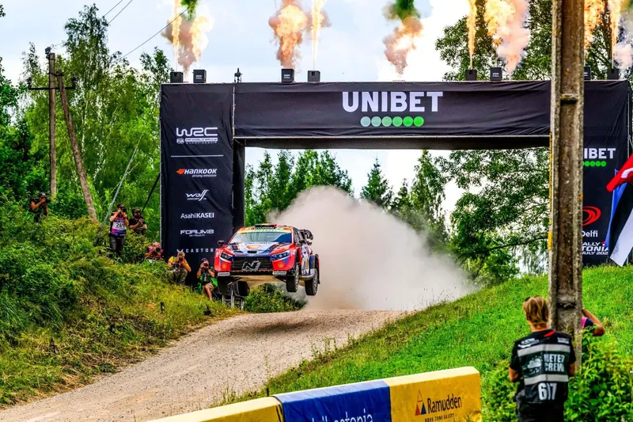

7 Rally1 Era Moments you Forgot!
The Rally1 era, at least in its current state, came at an end following the sensational finish of the 2026 Rally Italia Sardegna. The second pass of the Sassari - Argentiera stage was the last time we'll see the Puma, i20 N and GR Yaris Rally1s in…


7 Driver-Team Combos You Might Have Forgotten
In the World Rally Championship's 54 seasons, there have been countless driver and team combos, some successful, others were surprisingly bizarre one-offs or short-lived partnerships that history almost forgot. So let's have a look at seven…

Rally Finland 2026: The Stages
Rally Finland celebrates its 75th edition with an itinerary that features significant changes compared to last year. Iconic stages like Ruuhimäki, Myhinpää and Ouninpohja are absent from the rally, with Himos returning as the only stage on Sunday.…

Rally Estonia 2026 - The Stages
Rally Estonia features a shorter format, with the rally proper starting on Friday afternoon. The organisers have still managed to exceed the 300 competitive kilometer mark, with mostly identical stages to last year.

How often does the fastest driver actually win in the WRC?
How often does the fastest driver in a rally actually win in the end? It's a simple question, but it's quite tricky when you think about it. Is the winner always the fastest in a rally? How has this changed through the years? In other words, who…
2026 Route Previews


Stats Posts
See all ›
2025: The WRC Season in Numbers
With the 2025 season reaching its conclusion, we take a deep dive to look at how each driver and team performed across the year. The Powerslide Stats Season Review is back and it's nerdier than ever!

A Look Back at the 2025 ERC Season
The European Rally Championship season drew to a close in Croatia this past weekend, with Miko Marczyk emerging victorious.

The R5 Class: The Story So Far
We take a deep dive in all R5/Rally2 cars, and how they've performed in international competitions since 2013, as well seeing who the representative GOATs are!

Powerslide Stats Centre: The Story of the 2017 WRC Season
The 2017 WRC Season was the start of a new era for the sport. New and exciting cars gave us a modern classic. Let's take a deep dive to see how it unfolded, using stats and more.
Acropolis Rally Posts


Route History of the Acropolis


Concept Itineraries
See all ›
How would Rally Finland look if it used Remote Services?
Dimitris' failed attempt at a Rally Finland concept!

What could an ERC rally based in Ioannina look like?
Greece recently re-entered the international stage with its own tarmac rally. Would a rally like this one be enticing for the ERC promoter?

Could this be how Rally Croatia will look like in the future? - Adriatic Rally Concept
After the end of this year's Rally Croatia, rumors started to emerge that the event organisers are exploring the idea of moving the event to someplace else in the future. The rumored locations include Dubrovnik, a location that has never hosted a…

What to expect from a WRC rally in the Canary Islands
The WRC will be returning to Spain after a two year's absence, in a new location, with the Canary Islands being set to host a WRC event for the first time. The Gran Canaria island has been host of the Rally Islas Canarias (formerly known as Rally El…
Στα Ελληνικά


More History